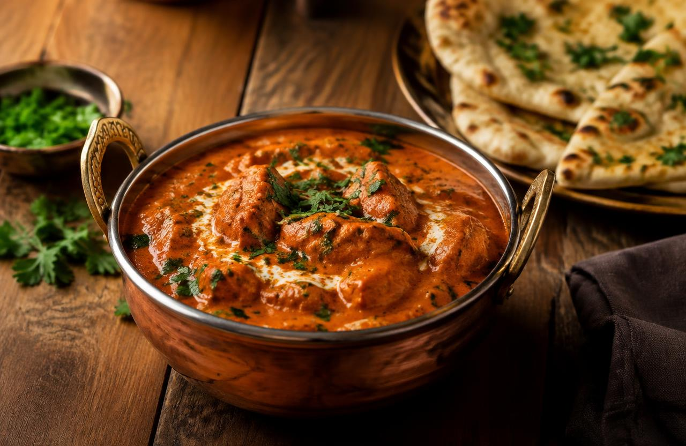

Butter Chicken

Description
Butter chicken, or murgh makhani, is a beloved North Indian curry: smoky marinated chicken simmered in a velvety tomato, butter and cream sauce.
Mildly spiced and deeply aromatic, it's perfect with warm naan or fluffy basmati rice.
Ingredients
- 700 g boneless chicken thighs
- 1 cup plain yogurt
- 2 tsp garam masala
- 1 tsp turmeric
- 2 tsp chili powder
- 3 tbsp butter
- 1 onion, finely chopped
- 1 tbsp ginger-garlic paste
- 400 g tomato purée
- ½ cup heavy cream
- 1 tsp dried fenugreek leaves
- Fresh cilantro
Steps
- Marinate chicken in yogurt, half the spices and salt for at least 1 hour.
- Sear chicken in a hot pan until charred at the edges. Set aside.
- Melt butter, then sauté onion until golden and add ginger-garlic paste.
- Add tomato purée and remaining spices; simmer 15 minutes.
- Blend the sauce smooth, return to the pan, and stir in cream and fenugreek.
- Add chicken, simmer 10 minutes, and garnish with cilantro.